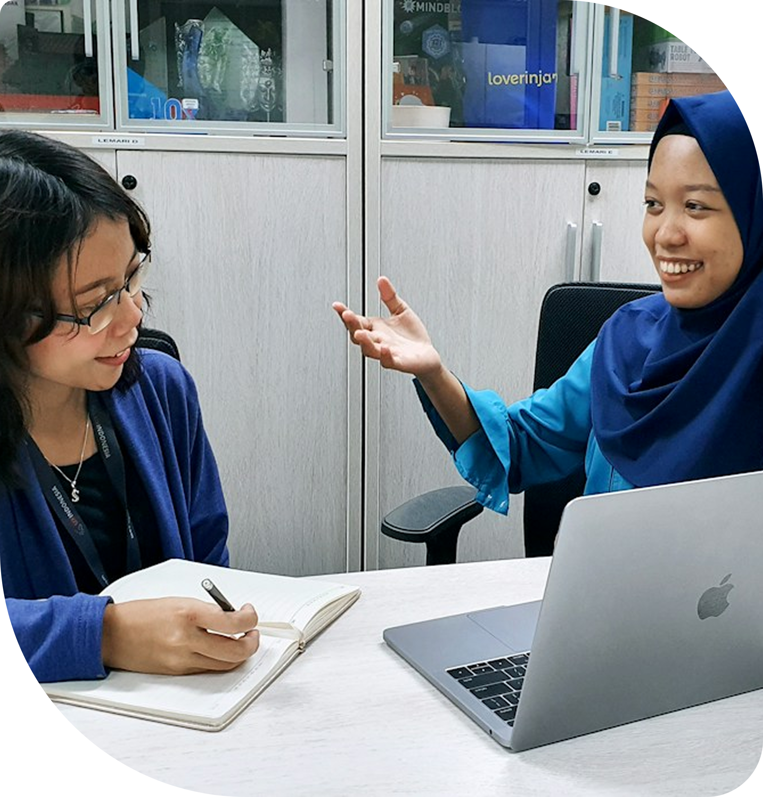
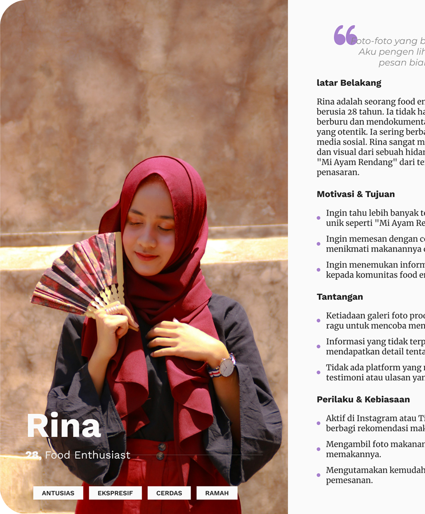
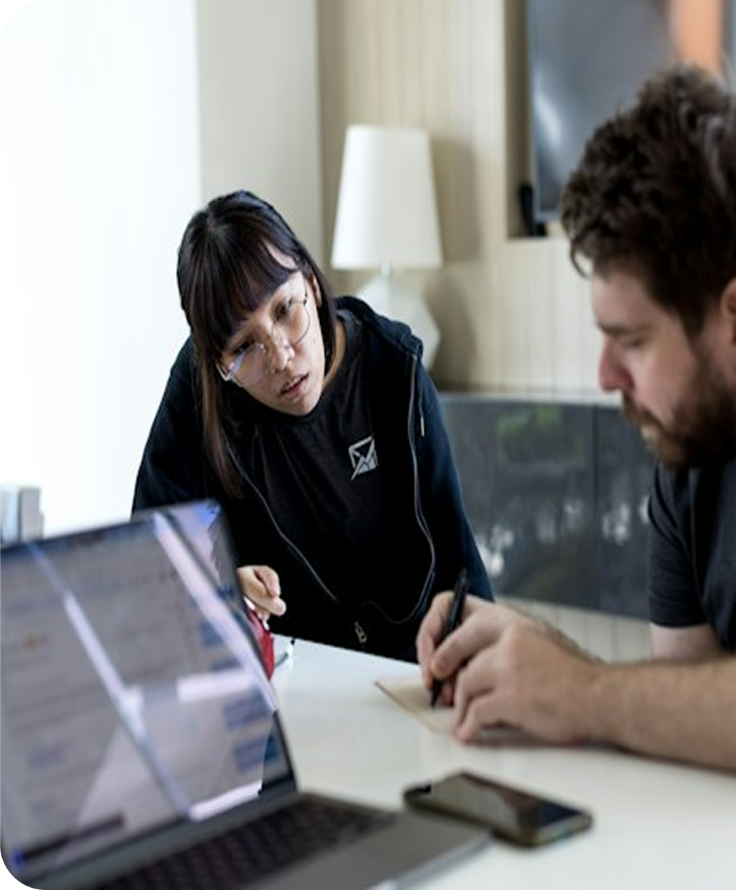
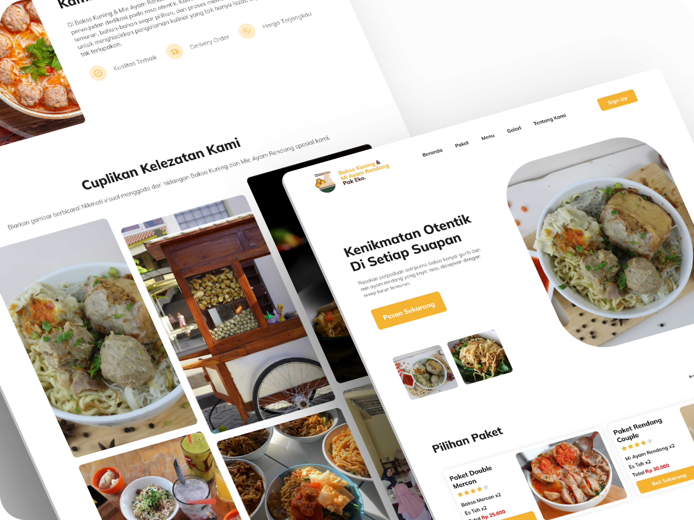

Understand the User & Context
Discover the customer journey, needs, and expectations before designing the experience.
UI/UX Designer
Method: User-Centered Design (UCD)

For over two decades, Bakso Kuning & Mi Ayam Rendang Pak Eko has been a beloved culinary destination, serving authentic and comforting Indonesian flavors. This website was created to make the menu easier to discover, bring the brand's story to life, and help customers order their favorite dishes from anywhere.


How I Build Products
Discover the customer journey, needs, and expectations before designing the experience.
Translate research findings into clear content, features, and ordering priorities.
Turn the requirements into a warm, practical interface that makes the menu easy to explore.
Review the design against the user's goals and refine the experience for clarity.

UCD Process
Before designing, I immersed myself in the restaurant's story, menu, and customer experience to understand what makes Bakso Kuning special.
UCD Process
Translating research insights into actionable data, I specified the core requirements for the website. By developing a user persona, defining specific needs, and formulating clear project goals, I established a solid framework for the product.

Loyal customers value the 20-year legacy but need remote access for takeaways.

A responsive website featuring a visual digital menu and direct WhatsApp integration for seamless ordering.
Create a digital storefront bridging traditional culinary charm with modern convenience through direct WhatsApp ordering.
Design Execution
Mapping the experience through structural wireframes, followed by a high-fidelity prototype that integrates navigation, ordering, and visual storytelling.

More Projects
I provide end-to-end digital solutions, from wireframing in Figma to fully developed websites. Let's create an engaging digital product that perfectly aligns with your business goals.